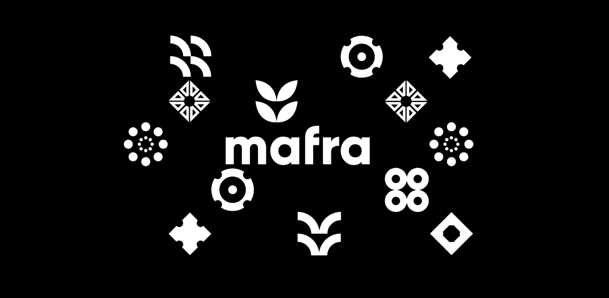
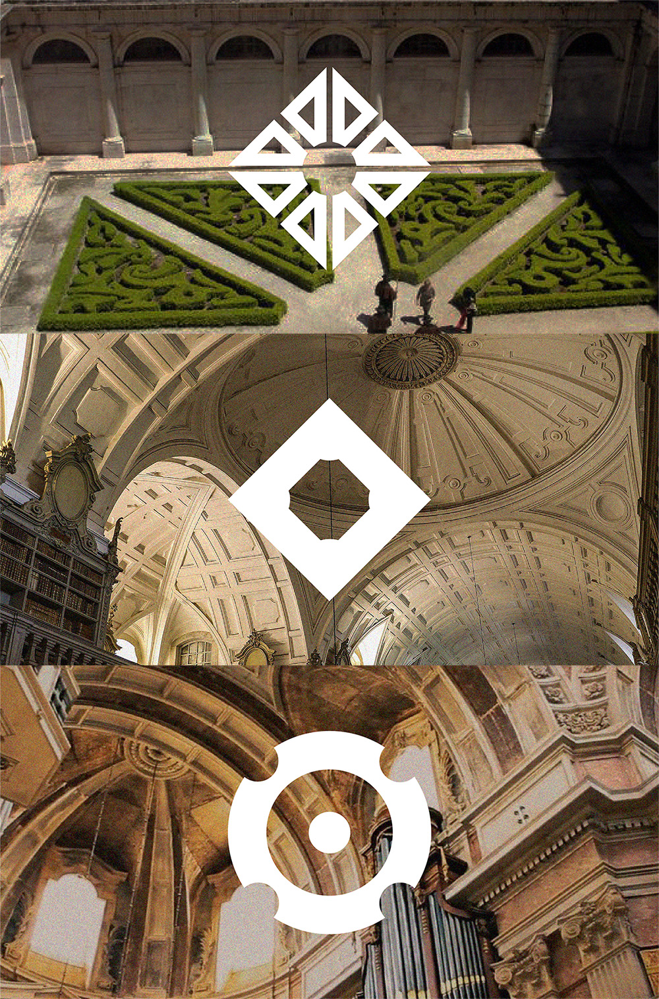
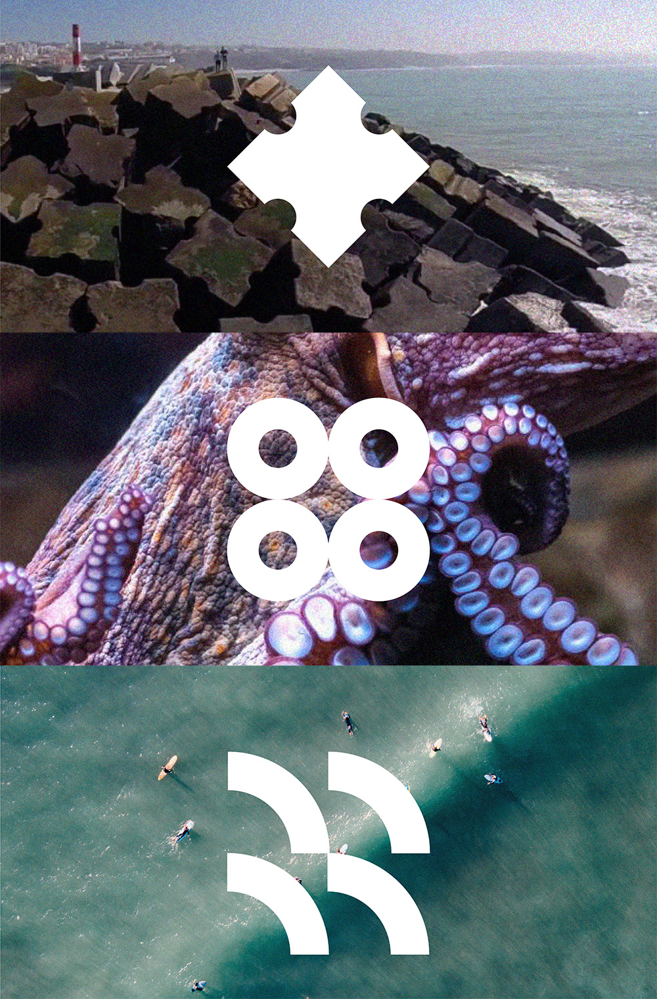
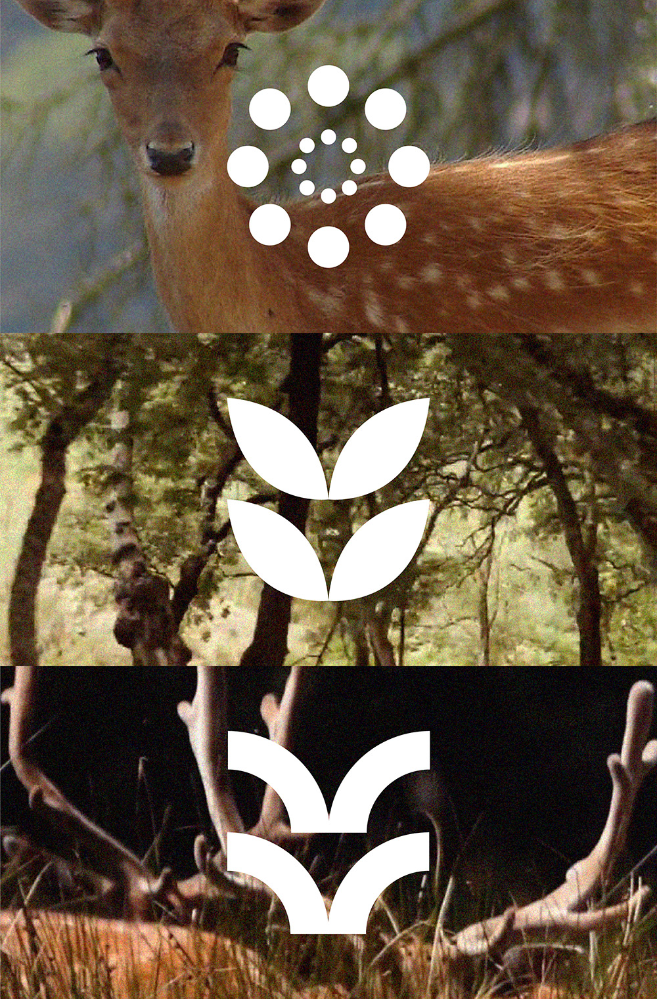
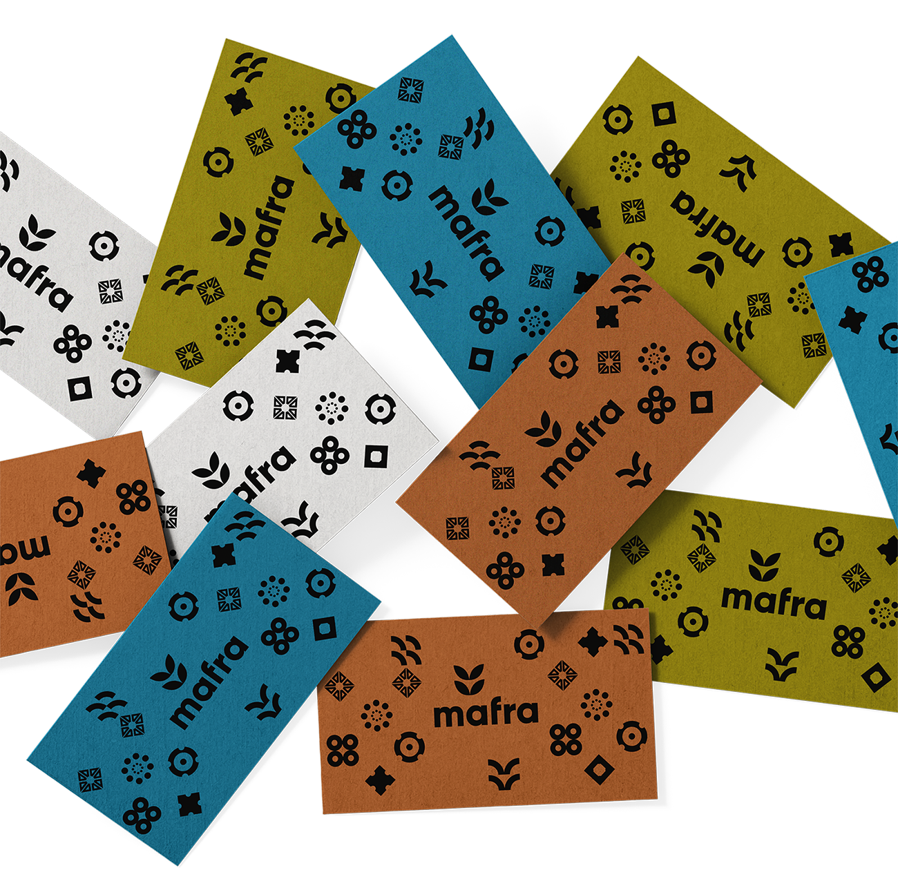
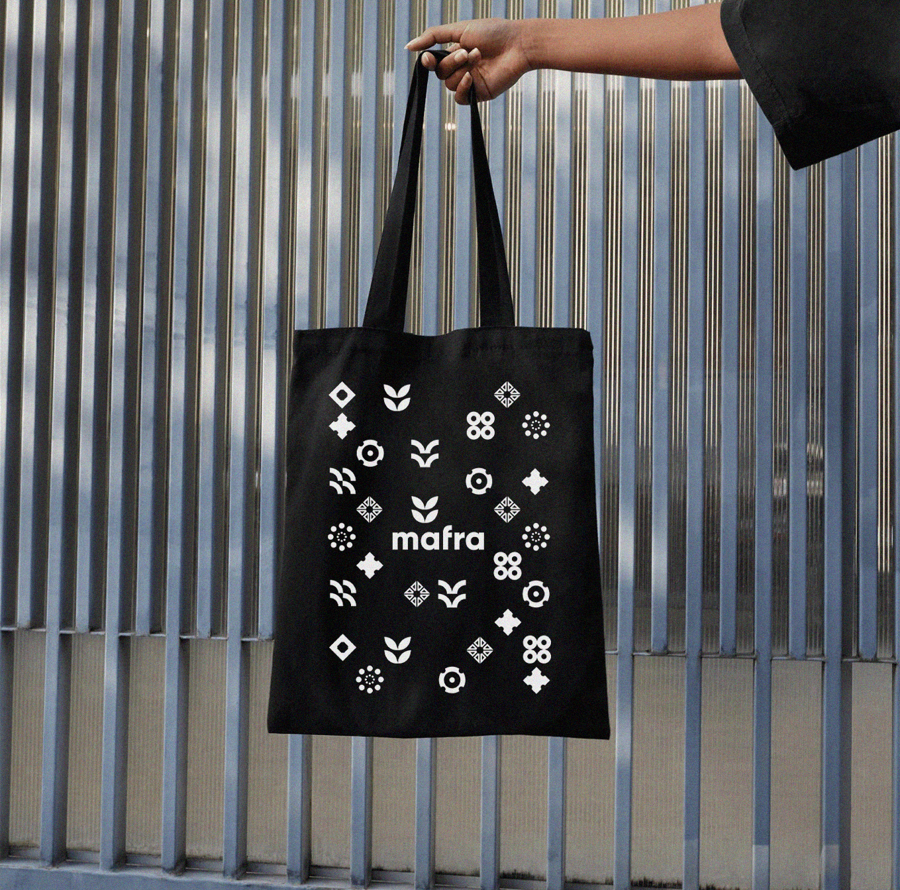
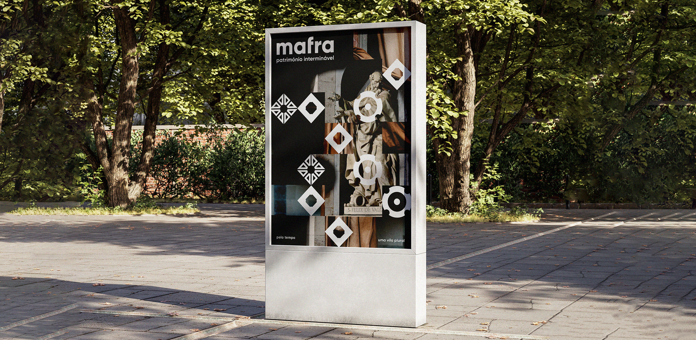
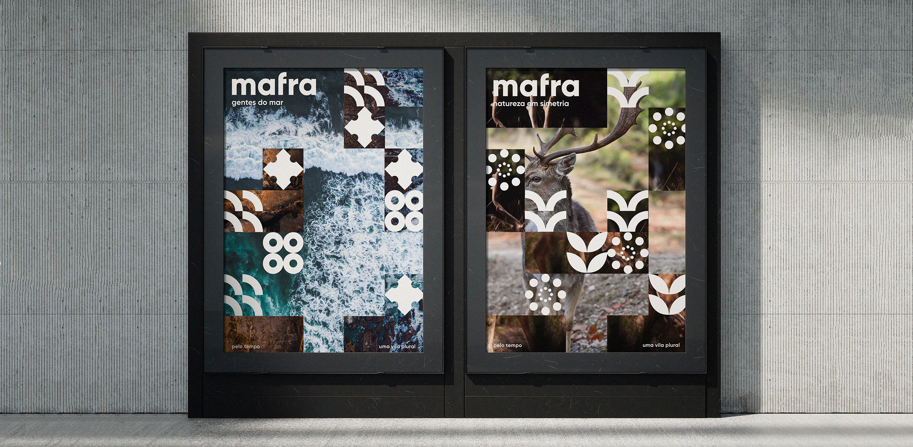

The 3 areas led to the creation of 9 icons (3 for each area). The clean lines reflect a contemporary approach to shapes that have stood through time and are still distinctive elements of Mafra. Moreover, we designed the 3 posters (one for each area) by breaking down the images into a grid of squares. The goal was to represent the plurality of Mafra, deconstructing the past and blending it with the present. Finally, the 3 teasers stitched together the footage using a sound with multiple nuances, representing the richness of each area and capturing the essence of the town.
(This is a fictional project carried out for my Bachelor’s degree at Faculdade de Belas-Artes da ULisboa.)







